Sports
Peak action, every time.
I shoot media for Jones College Athletics — football under the lights, soccer at dusk, tennis at golden hour. Programs get season coverage; athletes and parents get the frame that makes the season real.


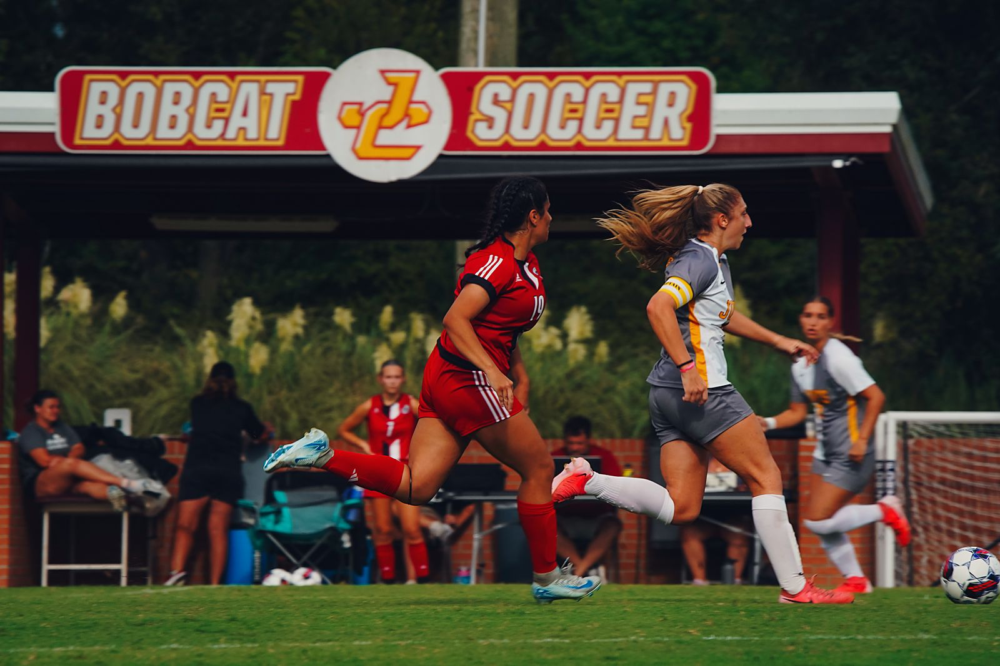
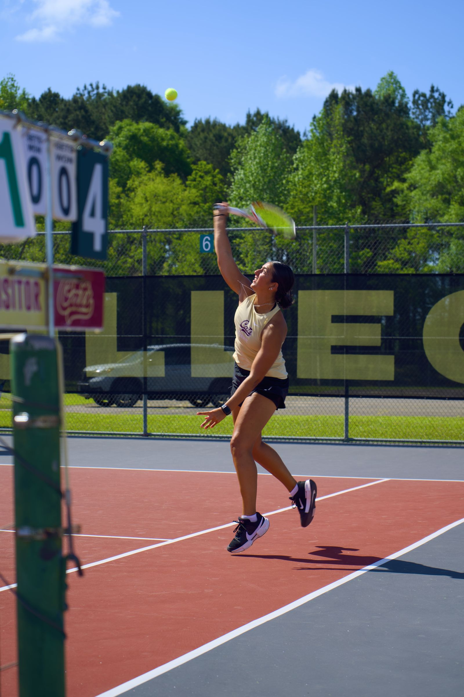
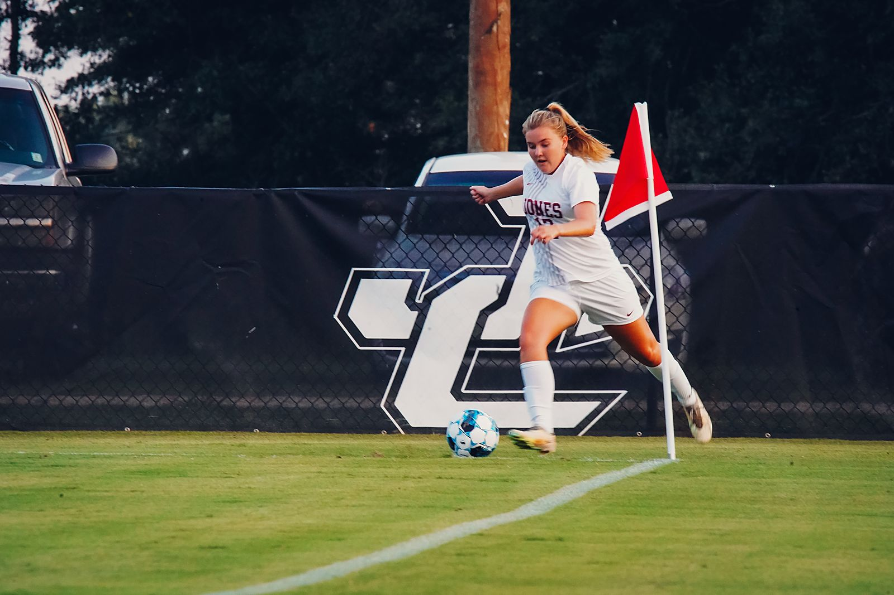
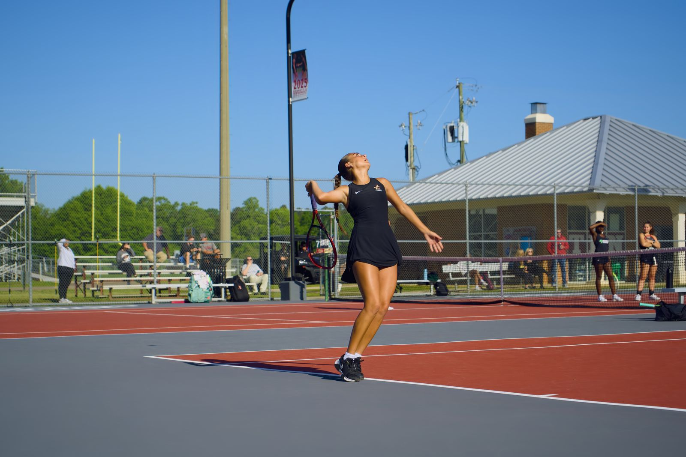

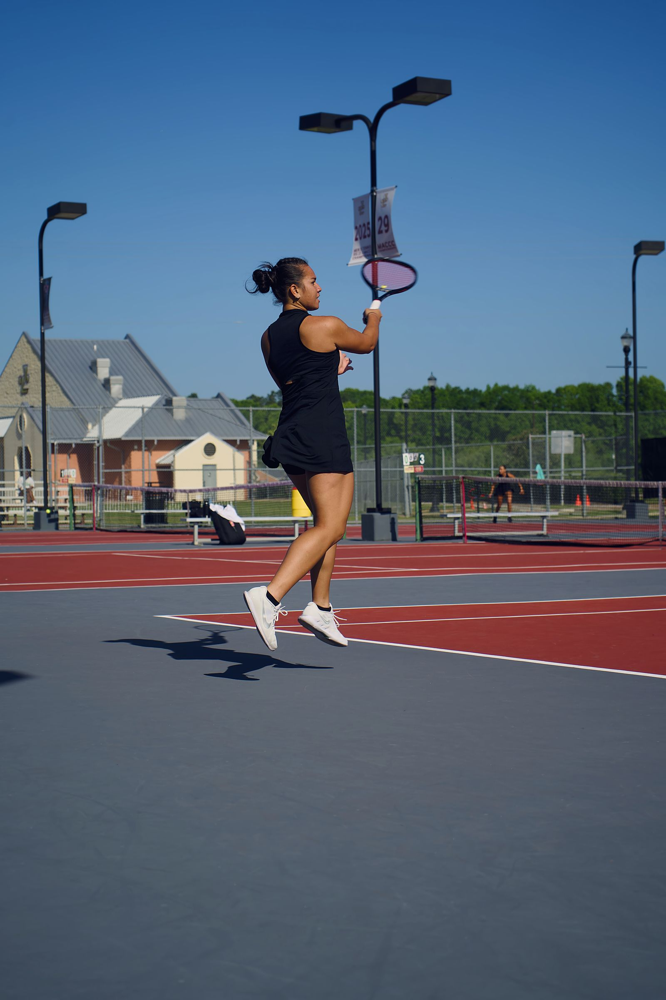
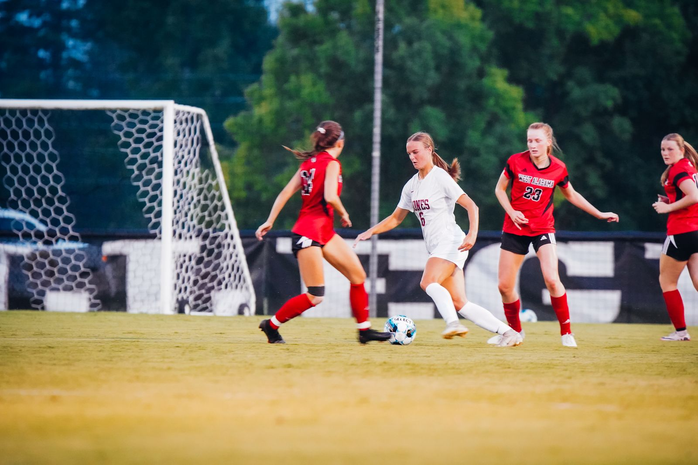
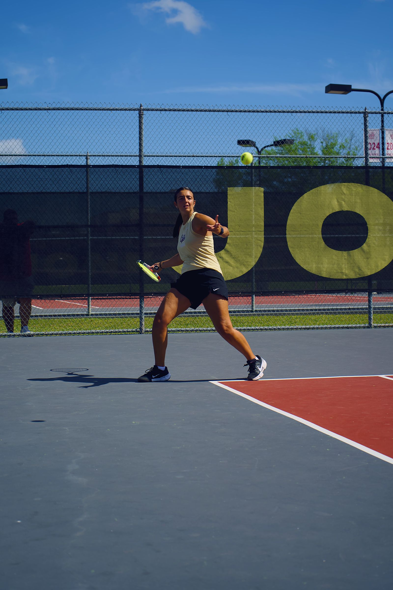
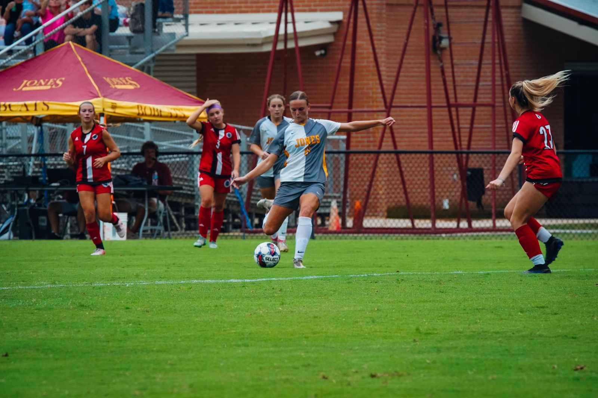
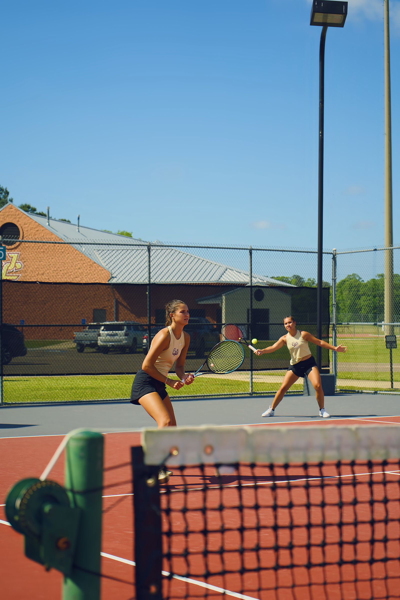
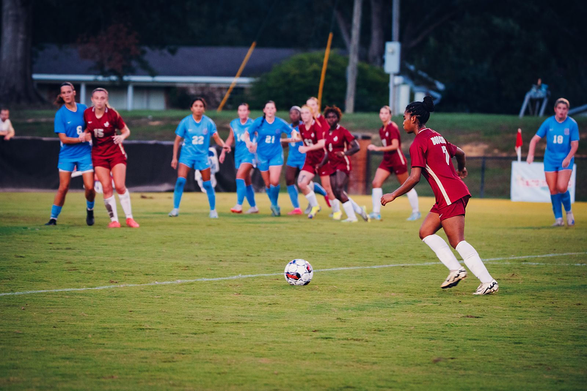
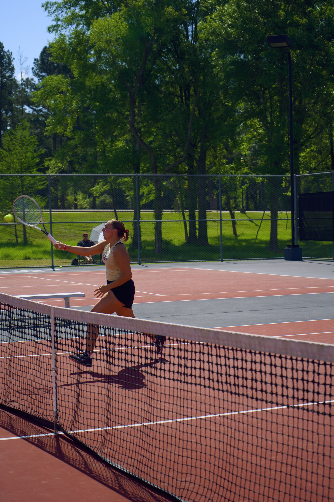
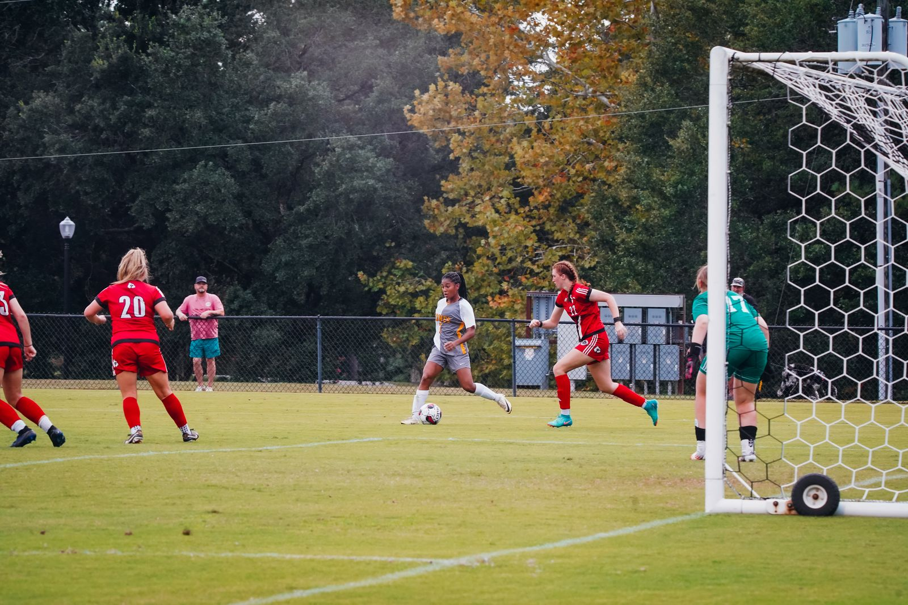
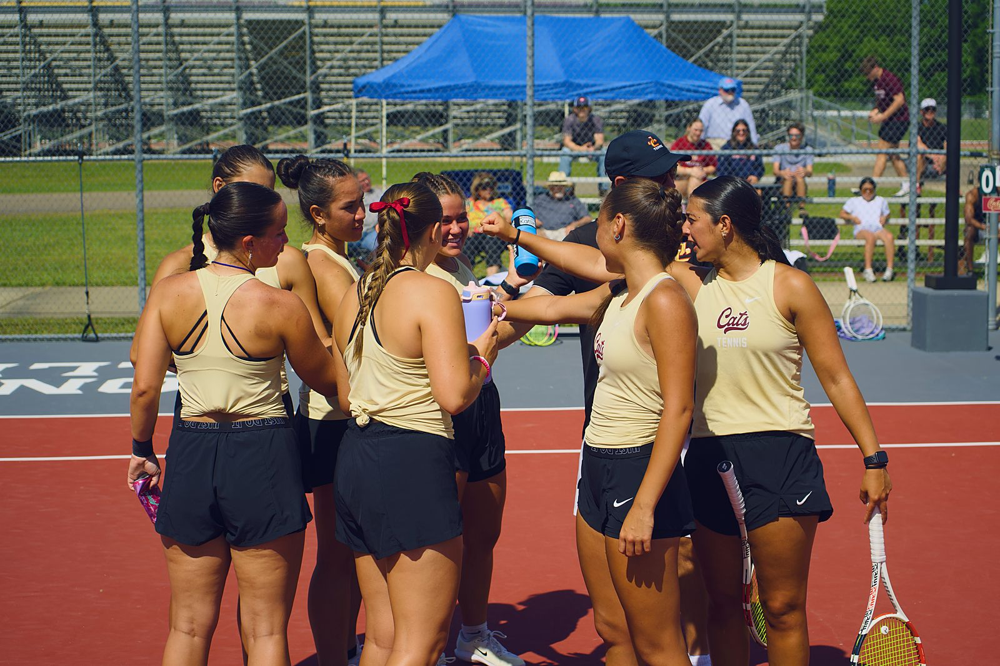
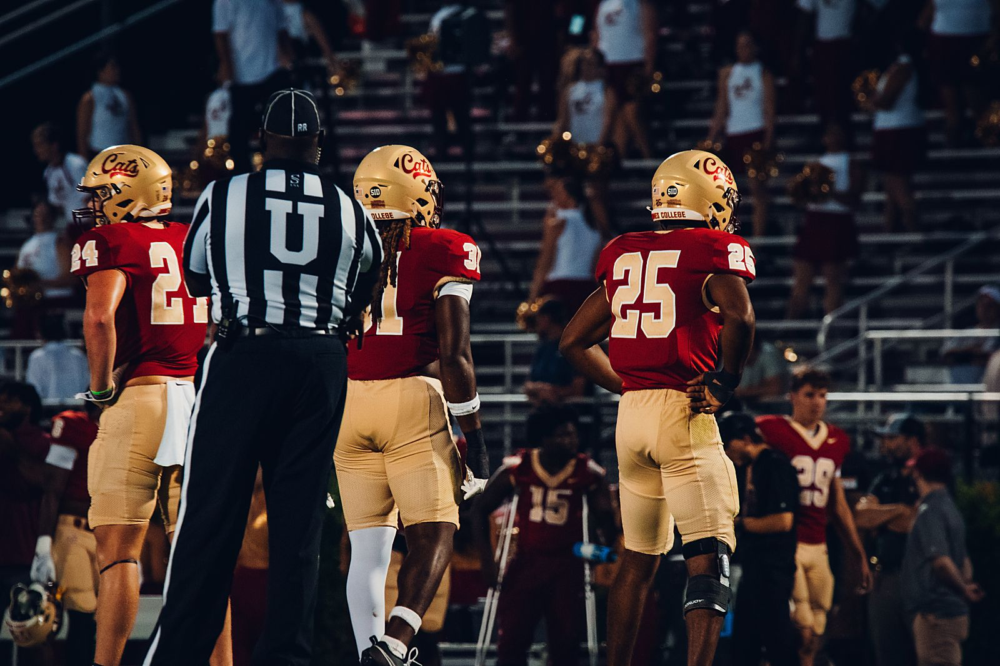
For athletes & programs
Game coverage
from $125 PER GAME
- Full-game shooting, peak action + sidelines
- Fast social-ready selects
- Team gallery delivery
Athlete sessions
from $150 PER ATHLETE
- Individual portraits in uniform, stadium or court
- Banner & signing-day graphics ready
- Recruiting-profile friendly
Season media
custom MULTI-GAME
- Multi-game packages for programs
- Photo + video + drone in one crew
- Consistent look all season